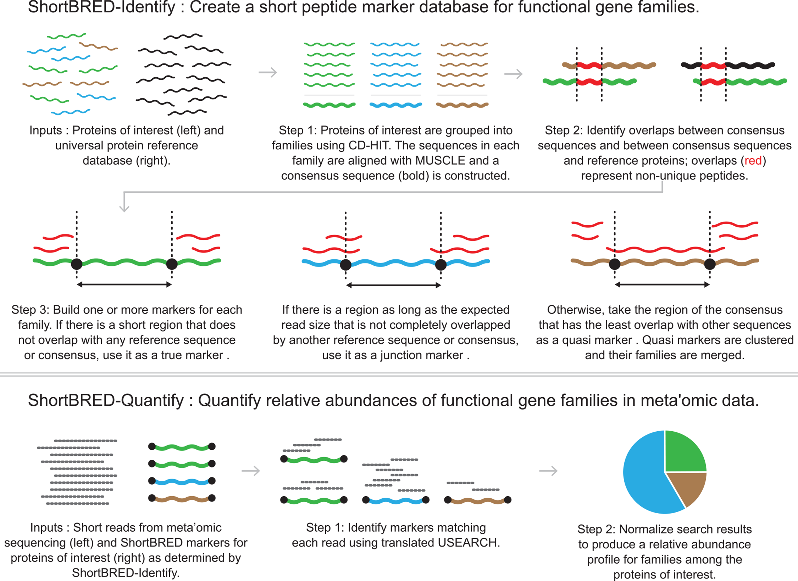

ShortBRED Analysis.
ShortBRED Analysis.
What is ShortBRED? (and what did we use it for?)
ShortBRED is a tool developed by the Huttenhower group for profiling specific protein families of interest using shotgun metagenomic data. Here is an image taken from their paper* explaining the process:

In this project it was used to profile genes involved in butyrate synthesis using a set of genes identified by Vital et al in their paper Revealing the Bacterial Butyrate Synthesis Pathways by Analyzing (Meta)genomic Data.
Genes used in this analysis were downloaded from the Integrated Microbial Genomes and Microbiomes database. A fastq file which acted as our ShortBRED database for this analysis is included in the Github repo for this project.
Run the analysis:
To run the example of this shortBRED code on one of the fastqs from this project:
Note butyrate_pw_genes_aa_seqs.fa is the fasta file we used to build the ShortBRED marker db. We also provide you with the pre-built marker db: butyrate_pw_genes_markers.fa
Analysis setup:
Install dependencies:
(Note that we primarily use the SSH links for git clone. The HTTPS git clone commands are also provided in paranthesis)
- Clone this repo to a machine with your raw data where you plan to do your analysis.
git clone git@github.com:mskcc-microbiome/butyrate_and_icb_2025.git(git clone https://github.com/mskcc-microbiome/butyrate_and_icb_2025.git)
- Install usearch (just need v6.0.307 or later, we use v 11.0.667):
curl https://www.drive5.com/downloads/usearch11.0.667_i86linux32.gz --output usearch11.0.667_i86linux32.gzgunzip usearch11.0.667_i86linux32.gz- Note: make sure you change the permissions if needed so that you have the rights to execute this file (
chmod u+x usearch11.0.667_i86linux32)
- Install Shortbred
git clone git@github.com:biobakery/shortbred.git(git clone https://github.com/biobakery/shortbred.git)
Analysis Options:
Bash script (easiest to get up and going):
Set up Environment:
First create and activate an environment with the correct installed packages:
From the base dir of this repo:
mamba env create -n shortbred_env -f data_processing/shortbred_analysis/envs/shortbred_env.yaml mamba activate shortbred_envMake sure this env is activated whenever you run this shortbred analysis!
Update Config
Now open data_processing/shortbred_analysis/config_params.sh and edit the following variables:
USEARCH- this should be the path to usearch that you installed in Analysis setupMARKER_FASTQ- this is the marker fastq we supplied for this analysis! Location:data_processing/shortbred_analysis/butyrate_pw_genes_markers.faQUANTIFY_SCRIPT- the path to theshortbred_quantify.pyscript in your Shortbred installation.
Test Run (recommended)
Save data_processing/shortbred_analysis/shortbred_template.sh with a new name ie cp data_processing/shortbred_analysis/shortbred_template.sh data_processing/shortbred_analysis/shortbred_test_run.sh.
Edit the header to add job specific details (note we use LSF headers, please update to whatever submission manager you use!)
#BSUB -J->#BSUB -J test_shortbred_run#BSUB -o->#BSUB -o test_shortbred_run.stdout#BSUB -eo->#BSUB -eo test_shortbred_run.stderr#BSUB -n->#BSUB -n 1(for example, can do more than this too, and set thethreadsparameter below to match.)
Manually edit the following parameters:
input: thefastq.gzfile you are running your analysis on.output: desired output file. ie: {$sample_name}_butyrate.txt”.tmp_dir: name of a temporary directory this analysis can use while running. (ie {$sample_name}_shortbred_tmp)threads: treads used in test (can default to 1 if needed).
submit the job!
sh data_processing/shortbred_analysis/shortbred_test_run.sh or if submitting as a LSF job: bsub < data_processing/shortbred_analysis/shortbred_test_run.sh.
Submit a list of jobs:
Given a folder of fastq.gz files, run a job to submit the shortbred analysis on all of them. We wrote an example script for doing this here:
data_processing/shortbred_analysis/shortbred_run_on_folder_example.sh
You may need to modify this for your exact use case.
To run it, modify the dir
Snakemake:
Using the Snakefile in this folder you should be able to run this file locally or on an HPC. If you use LSF we have a Snakemake profile you can use for submissions.
ShortBRED has the following environmental requirements: - Python 2.7.9 - Biopython v1.65 - ncbi-blast-2.2.28+ - usearch v6.0.307 (Please make sure this is up to date. Earlier versions of usearch use a different command for making database than what is expected by ShortBRED.) - MUSCLE v3.8.31 - CD-HIT version 4.6
These environmental requirements are captured in the shortbred_env.yaml file used by the Snakefile for ShortBRED analysis.
Our analysis currently assumes a structure where each sample has a directory containing R1 and R2 as fastq.gz files. The sample_dir and sample name will be provided as dynamic entries to the config.
You will also need to update the config file for the snakemake workflow for the following parameters: - quantify_script: (the path to the shortBRED quantify_script) - marker_fastq: (path to the marker fastq we provided (or updated marker.fastq if using your own reference)). - usearch: the path to your usearch installation.
Test files:
- Download a test file, ie: one of the fastqs from our paper
Citations:
- Kaminski J, Gibson MK, Franzosa EA, Segata N, Dantas G, Huttenhower C (2015) High-Specificity Targeted Functional Profiling in Microbial Communities with ShortBRED. PLoS Comput Biol 11(12): e1004557.